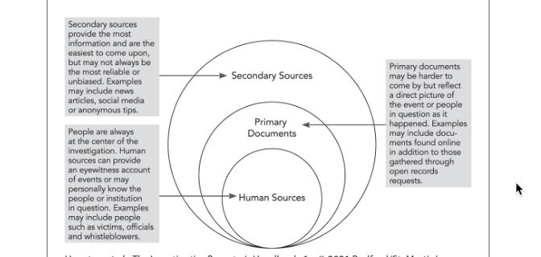

5 Reporting from the outside-in
Many investigative reporters use a technique called “outside-in” reporting, which refers to circling around your central subject using easily obtained secondary sources as you move closer and closer to your topic. Here is how the Investigative Reporters’ Handbook visualizes this approach:

You can take this approach with any longer story – use a strategy to learn enough about your subject (human, institutional or topical) to hone your story idea, evaluate newsworthiness, and develop meaningful questions – before you start talking with people at the center of your story.
During the pandemic, I did a few hours of backgrounding on a hypothetical story on evictions during COVID in Arizona. Here is a walkthrough of that exercise.
5.1 Level 1: News reports and opinion pieces
There are very few people, institutions or topics that have never been touched by another news organization. Whenever you start a story, your first stop will be to see what that coverage looks like, and discern what you can learn from it.
There are four goals in your review of news sources:
What does YOUR audience already know? In particular, if you have a specific news organization you hope will publish your work either as a freelancer or staff writer, it’s incumbent on you to know – in depth – what it has already published. But you’ll also want to know what has been published or aired in other markets, in competitors’ outlets, or in specialized news organizitaions. It will be hard for you to know what is newsworthy until you have a strong understanding of your idea’s place in the marketplace of news.
What are the terms of art and common search terms related to your subject? You learned a little about this in backgrounding people, but it’s important to know what terms to use in the future. For example, trying to find information on hate crimes, you may learn that one term of art is “bias-motivated crime”.
What are common sources of background information? These may include lawmakers, advocacy groups, academic experts or government oversight bodies. They include both documents and human sources.
What are the simplest ways to get to your story? Is there an ongoing under-covered lawsuit, or a government report that no one has noticed? Is there a place you can go to be at the center of the story? Is there one person who, when profiled, could provide the most human approach to the subject? You’re looking to exploit what others have done and others know, without repeating what other news organizations have already done.
National and local news
Be sure to check the archives of national news outlets for major stories on your topic. You might have to go to the library to get an efficient look at this, and you might end up finding their stories in local news as short versions. For example it’s relatively difficult to find the original version of Associated Press stories, but it’s easy to find a slew of news stories based on their reporting.
Some sources of news stories include:
- Nexis, Proquest in the library. Nexis UNI doesn’t have much in it, but it DOES have transcripts of major television news shows, which can be really helpful.
- Google News. It’s hard to search Google news using advanced operators. Instead, start in regular Google, then flip over to Google News once you have a good search. Make sure your query is general enough to pick up variations.
- Individual news site searches (the most difficult approach). The ones that are most difficult at ASU are Bloomberg and Bloomberg/Business Week and The Washington Post. You can get free subscriptions to the Wall Street Journal and the New York Times through the library.
- IRE story archives, which have the advantage of including only major efforts that have been submitted for prizes. You won’t always get the whole story, but you can get a questionnaire filled out by the authors describing their work and their findings.
Sometimes, opinion pieces are more enlightening about a topic than straight news stories because the authors must concisely explain something to an audience and tease out the most controversial elements in very few words. Look also for magazine stories in the more explanatory genres, especially the Atlantic, New Yorker and other elite publications.
Local news
Look for local news stories in other publications, including those that are NOT in your area.
You should do a full search in Google and in any special collections that you can for stories in your area. These probably will not be as in-depth as the national stories, but it will help you understand what might be newsworthy in your area. In other areas, the news stories might suggest sources and issues that have can be localized for your story.
- NewsBank at the library includes a lot of smaller news organizations
- If you’re working at the local level, consider creating a custom Google search, such as Arizona sources for the news organizations in your state.
- I also created a custom google search engine that includes 212 non-profit news sites, which are often not big enough to show up in general Google searches.
Make sure to actually review any of the stories you find that are very good fits for your story. You might find experts, references to documents and studies, leads toward lawsuits, and even hashtags that might come in handy later.
Don’t worry too much about what they actually say – instead, think about how they can contribute to your own story.
5.2 Level 2: Expert and government reports
Almost any topic you might consider has probably been studied by an academic researcher. Virtually any topic that touches on government policy may have been the subject of testimony, investigative reports from inspectors general or auditors. Here are some common document sources for these reports:
Academic articles
Be sure to look in Google Scholar separately from Google to find academic articles that relate to your subject. These are often not publicly available, but you can usually get access through a university library. If the library does not offer access, the authors may have posted a working version of the paper on their university web page.
You don’t have to understand the whole article, and you are not really THAT concerned right now with exactly what the researcher did. Instead, look for:
The review of previous work on the subject. These will usually start circling around the most respected researchers, who will show up in all of the literature reviews. They also give you a sense of what about your topic is well-established fact, and what is more theoretical or still not well understood.
A review of their methods - here, you are looking for ways the researchers found their data. Sometimes they have agreements with public agencies to look at documents that aren’t public. But a remarkable number of them are collections of news stories or other publicly available data that you can use. Look to see if they have made their data public somewhere.
When you have read enough, you may want to call one of the researchers. Some are willing to help on a story they care about - others just want to be quoted. Be sure to tell them that you are still doing background on the topic, but that their work has been helpful and you want their advice. Don’t waste their time - be sure to read through their work, even if you don’t understand all of it, before you call. Most academic articles have a lead author identified at the beginning and provide the name of the researcher to contact .
Government reports
The federal government funds many research reports on issues of public policy, and make those reports available for free. Some agencies have quite a bit of research, such as the Justice Department’s Office of Justice Programs, or the Environmental Protection Administration’s research area.
These reports are often summaries of statistical programs or otherwise relatively dull reports. But they point to sources of information and may have statistical evidence you need for your story.
You can also look at who has gotten grants from the agency to study issues under its purview.
Government investigations and testimony
Every state has a State Auditor, who usually works for the Legislature. These offices look at the health and accountability of spending programs in the state and in local governments. If there is anything on these sites about your topic, they will usually have a good road map to the records they used and the general health of the program.
Federal agencies have inspectors general who look for waste, fraud and abuse in federal programs; the Government Accountability Office does reports for members of Congress about issues of concern to lawmakers.
Look also for testimony at public hearings in Congress and the Legislature.
5.3 Level 3: Advocacy groups and people
You can’t do much with a story until you find compelling people to drive the narrative. Lawsuits are the source of many stories on public policy or issues – be sure to look for them. But it’s often easier to find advocacy groups who can point you to people who have been in touch with your story. You should have come across some of these in your earlier research, and now is the time to look at their reports and then contact them. Don’t worry if you don’t find an advocacy group exactly on target – most are happy to help reporters find the right people for their story if they have any interest in the outcome.
5.4 When you just want to find data and documents
A big part of data reporting is finding, creating or acquiring records you can use electronically.
Some sources of readily available data could include:
- Government agencies and open government sites
- Hobbyists and interest groups
- Data aggregators and data collectors
- Academic researchers who might share their data
- Microdata from surveys and some government programs, such as the Census, Medicare, the General Social Survey and several other standard sites.
- Social data through API’s from Spotify, Twitter and other services.
- Details scraped from online data sources that aren’t available in bulk.
There are also more difficult ways to find data:
- Public records requests
- Whistleblower leaks
- Home made databases created from documents, and free text or image document collections.
- Responses to a survey that you conduct yourself.
- Your own testing on issues such as water quality or soil contamination.
When you start on a project, you’ll usually rely on experts and advocates to lead you to a lot of the possible data sources. But you can also use these strategies to troll for interesting datasets that might make for good stories or practice.
Listen to any caveats and warnings. You may decide that they’re not important, but you don’t want to be blindsided by them in the end. And be sure to ask what they would do if they were you – often, people who have expertise in data have story or project ideas that they can’t get funded or approved, and would be happy for someone else to do them.
When you search using Google, try to use the advanced commands to more precisely hit your target. This tipsheet goes through all of the Google advanced search operators. It changes a lot.
Government agency sites
Try to guess what government agencies – state, local and federal – have an interest in your topic. Browse through their websites to find “Publications” or “Data and research”, or any searchable database. You’ll often find downloadable data there. Once you learn more, you can also evaluate how hard it will be to scrape the data you want. Don’t limit yourself to the jurisdications you care about. If one city or state has a good dataset, there is a strong chance that your local government will have the same thing.
Look at federal agency sites to find a least common denominator database – they are usually compiled from more detailed state or local reports.
Even if you can’t find the database, you might be able to find the name of a datset that is maintained internally in audits, footnotes of reports, or IT initiatives.
Once you know a good agency to search, use advanced Google searches for filetype:csv or filetype:xlsx, and limit the site to an agency or city site to bring up datasets that they are letting users download.
News reports
One of the most useful sources to find the names of databases and their original sources is news reports that relied on the data, or refers to a data source quoted by experts. It doesn’t matter if you’re looking at your own area or others – most places have the same kinds of information collected and stories are similar across geographic areas.
You should get good at using all of the resources as precisely as you can. That means getting very familiar with advanced searching in Google, and using LexisNexis and other news databases provided by the ASU library. These offer much more targeted searching than the usual Google search, and will result in much more on-point stories. When you find a good story, consider logging it in a spreadsheet or in doc, and identify:
- Who wrote it and when
- What government sources of data are explicitly mentioned.
- What analysis of that data was done by the news outlet, or what research it depended on.
- Any terms of art that seem to be used around your topic. For example, hate crimes are more frequently referred to as “bias” crimes in many articles – searching for “hate” might not surface them.
IRE.org tipsheets
Another source for information on news stories that used data reporting is IRE, which has two ways to search for more details: the ire.org tip sheets and story archive. Log into IRE.org and choose the tipsheets to look for guides from other reporters; choose the story database to look for stories on your general topic and then click into the form that the reporters filled out that go through their sources. You’ll often find a pair of them – a story, and a tip sheet – that were done by the same person the same year.
(The database library is currently undergoing some review, so a lot of the data listed there could be out of date. But it might also point you to standard sources for data.)
Academic articles
Make sure to do a Google Scholar search for your topic. You will often find one or two researchers who have delved into your subject or a single source. This is often a great shortcut. For example, in the News 21 example, a search of hate crimes in Google Scholar identified an article called “Documenting Hate Crimes in the United States: Some consideration on data sources,” from APA PsycNet. Although this was specifically about sexual orientation and gender diversity, it cataloged the different ways that scholars try to document bias crimes. Once Devine settled on the crime victimization survey, another Google scholar search surfaced an expert on the survey who wrote about how it had changed over the years. He turned out to be the former chief of the Justice Department section that ran the survey, and was one of the project’s best sources. Another source led her to the book, “Statistics for Criminology and Criminal Justice.” One of the authors of that book also provided advice.
Another value of this approach is that it will help you find the technical jargon for the topic you’re studying. It’s often very difficult to do literature searches without knowing that term.
Think tanks / interest groups
Try to find some interest groups that care a lot about your topic on all sides. They often have websites with recent research on your topic and might have experts you can consult. Take their advice cautiously because they often have a point to prove and are unabashed about twisting data to make their point. However, you can often use their raw data to draw your own conclusions. Some news organizations frown on this, so be sure to be transparent about who they are and what they’ve done.
Another good way to use interest groups and think tanks is to get initial versions of public records from them while you wait for your own requests to be processed. At The Washington Post, we used an old version of a weapons trace database for a year while we fought the government for our own; we also used a copy of Agriculture subsidies acquired by the Environmental Working Group while we were waiting for our own public records requests to be completed.
Sometimes, gathering the Tweets from advocates can provide a rich dataset, and it’s relatively easy to do. For example, I once used the Twitter posts from the Police Misconduct project out of the Cato Institute to get a list of all of the stories they’d compiled on the topic.
Data collectors
Several sites are trying to make businesses out of collected and maintaining databases. Others make available data that they have collected in the past.
Be sure to look at the original source for any data you find there. You wouldn’t say a news article came from Google News or Lexis, and you wouldn’t say a dataset came from Google Data Search. If it’s not documented at all, you might have to contact the owner for more detail.
Be careful of most of these. They’re often old, undocumented and poorly vetted. But they will give you a sense of what you might be able to get from a more reliable source, or give you ideas for your own data collection effort.
*data.world** wants to be the Facebook or Instagram of data. It has both private and public accounts, and users upload data they want to share. This means it’s as varied as the people who are in it.
If your newsroom is an AP member, you might have access to its data.world feed, which contains its curated and documented data that local newsrooms can use for their own stories. Some reporters also use data.world to store their public records. Some government agencies are posting their data directly to data.world. But in other cases, they’re undocumented hobbyists.
Vet these the same way you would Google results.
Journalists’ sites You can often find individual journalists or journalism organizations in various sharing sites, including Github (which doesn’t show up in default Google searches), data.world and other versioning. Look through their sites to see what they have collected – it’s there to share. Fivethirtyeight, ProPublica and the Los Angeles Times have particularly active data archives.
Google data search is, well, the Google of data. In general, data search has limited sources and is more and more frequently logging data sets that are posted by state and local government sources.
It makes no attempt to curate the search, though, so be cautious when you find something.
One use for the dataset search is to see what other cities and counties have voluntarily released. When you see that, it often means your local or state government might have similar data you can request.
For example, searching for police shootings brings up a dataset released by the Orlando Police Department, which contains far more detail than the same dataset released by Phoenix in 2018:

Be sure to look for different terms meaning the same thing. For example, searching “use of force” brings you to completely different sets of data than “police shootings”.
5.5 Vetting data provenance
Before you even open a dataset, you should know how your dataset was collected, who it originally came from and how current it is. A future chapter will go through many of the ways reporters check data they’ve found for completeness, mistakes or other problems.
At first blush, look for anything that precludes using the data because you can’t identify who is responsible for it or how it was collected. This is the same basic vetting you’d do on any source you hope to use.
Look for:
The original source. If you are getting it from a secondary source, look to see how hard it will be to get from original. If it’s from a secondary source, how reliable is it? Are you going to be comfortable crediting them for the data? If you can’t identify where or how the data was collected, you probably can’t use it.
How others have used it and what criticisms were made of that use.
The timeliness of the data. Anything more than two or three years old will be effectively useless for a news article. If it’s old, you should have a plan for how it will be updated.
Data definitions, data dictionaries or record layouts. These are maps to the underlying data, and those definitions can prove difficult to understand.
5.6 An example: News21 “Hate in America”
In 2018, News 21 – the multi-university investigative reporting fellowship hosted by ASU’s Cronkite School of Journalism – chose “Hate in America” as its topic for the year. It was a risk because others had been reporting on the subject for more than a year, making it more difficult for News 21 to break new ground. It was also difficult because it became clear quite quickly that no one had documented every case of hate crimes or hate-driven incidents in the U.S.
Data News 21 used
That meant that the team had to find some creative way to quantify the problem. Some of the sources they used included:
Raw data from the National Crime Victimization Survey, an annual survey of crime victims that asks whether hate was an element of the crime. Reporters Catherine Devine and Allie Bice could have used data from a report produced by the Justice Department, but instead analyzed the raw data in a new way to show that about twice as many incidents may have been motivated by hate than previously acknowledged. That analysis was thoroughly vetted by experts in the survey, in hate crimes, and in criminology. It also created a structure around the entire package and provided a newsy lead to the overview story
A database created by a team of reporters who monitored two weeks’ of social media activity from users associated with white nationalists, new-Nazis and other far-right groups on sites including Twitter, Facebook, Gab and VK. It enabled Kia Gardener to write:
News 21 monitored the daily social media activity of various far-right users, including white nationalists and neo-Nazis, from June 10 to June 24. Those tracked had more than 3 million followers combined. Reporters recorded and compiled more than 2,500 posts on popular platforms, such as Twitter and Facebook, and emerging social media platforms, including Gab and VK.
About half the posts were directed at specific demographics or communities, from black Americans and Latinos to Jewish people and LGBTQ members….
– Social Media: Where voices of hate find a place to preach, News 21, August 2018
Federal prosecutions of hate crimes under the various federal statutes. Reporter Lenny Martinez scraped all of the Justice Department’s hate crime-related press releases to find cases the government bragged about. Those cases were supplemented by a list of cases extracted from Westlaw federal case database. The team logged each case in a Google sheet to show what kinds of incidents were pursued by federal prosecutors, and where.
ProPublica’s “Documenting Hate” project, which, with the Southern Poverty Law Center, tried to compile as many stories as they could about hate incidents. ProPublica’s database was a tip sheet, not a quantification. But it served one key goal of any data source: a source reporters could consult when seeking specific types of examples in specific locations.
The FBI Uniform Crime Report’s Hate Crime series. They quickly learned that the data is seriously flawed because of non-response from local police departments and a squishy definition of what should be included. Another flaw was that others, including ProPublica, had thoroughly reported on those flaws and the trends in the data, meaning it failed the test of newsworthiness.
Data the team didn’t use
There were also sources that the team considered but didn’t pursue, sometimes because of the difficulty and sometimes because they were less useful to the project than expected:
The Justice Department’s U.S. attorney case management system, which provided details on cases that the government chose not to pursue along with those they did. (A subsequent analysis showed that the vast majority of these cases were rejected by prosecutors, but vetting the analysis proved too difficult in the time available.)
Databases of graffiti maintained by local police departments. This would have required public records requests to each department for records that usually aren’t clearly public. The team also contacted Google and other companies that publish street level images to see if it would be possible to isolate the hate symbols. Companies declined release images that their users had flagged as offensive.
Historical questions from the Roper Center for Public Opinion Research and the General Social Survey that might have shed light on attitudes about race and religion over time. These proved to be difficult to match up over the years and didn’t really provide much insight.
These are just some of the ways the News 21 team looked far and wide for any sources that could be methodically used to document their stories. As with any project of this type, the search often failed but along the way the whole team learned more and more about the topic and got to know experts in a way they wouldn’t have if they were just seeking quotes.